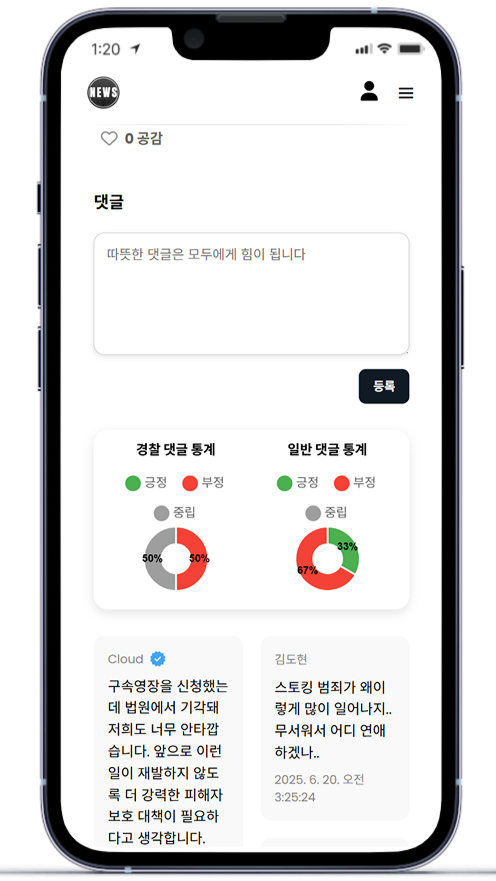
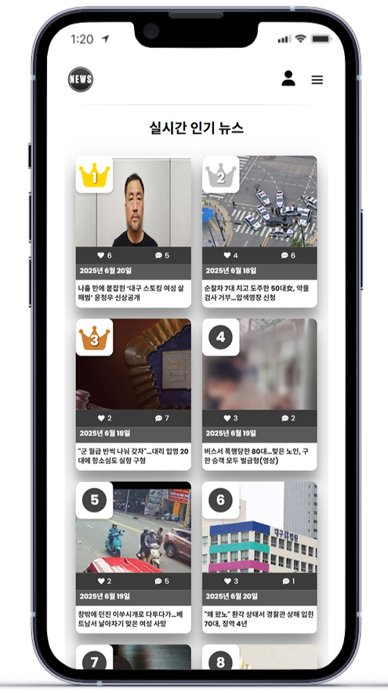
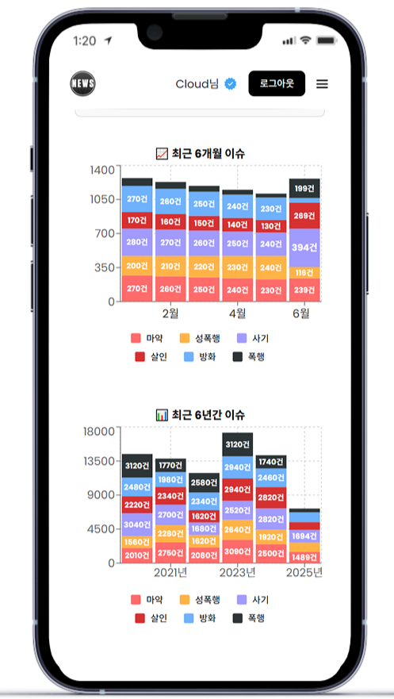
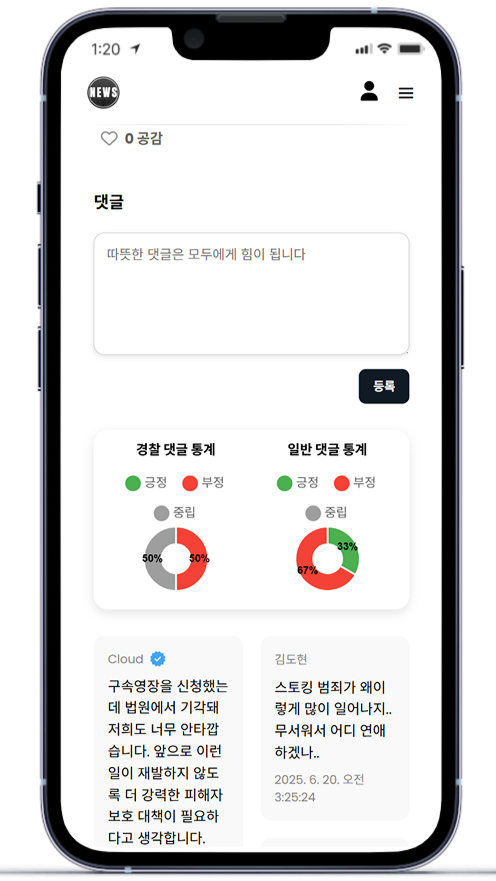
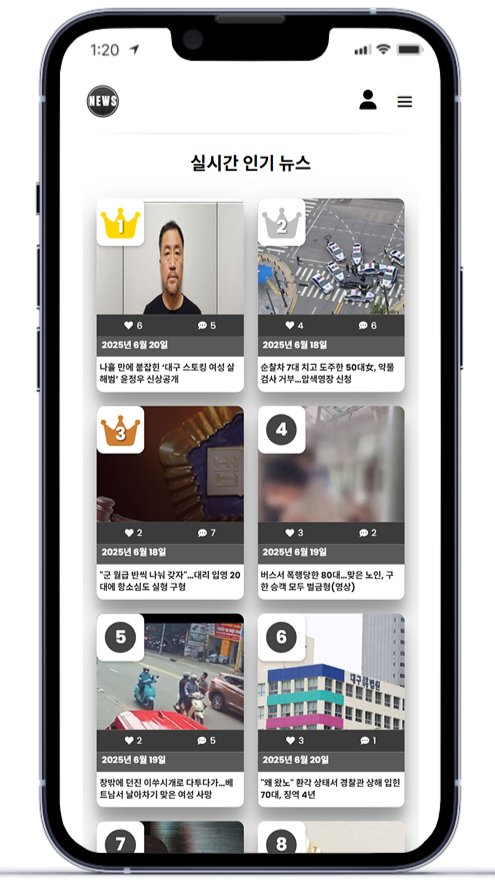
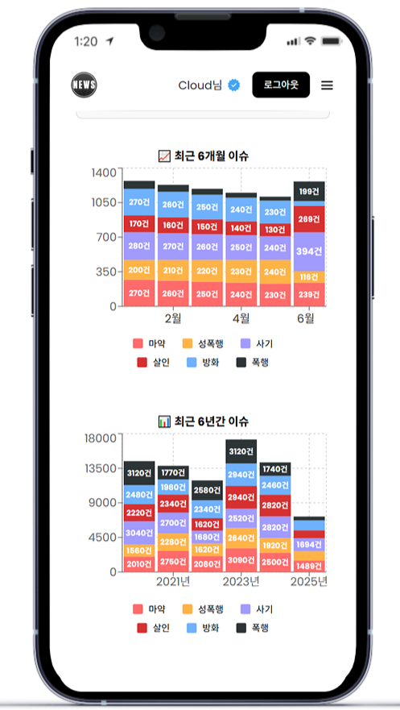

서경대학교
2020.03 ~ 2026.02소프트웨어학과 학사
졸업 예정
저를 한 줄로 소개하면 “문제를 구조적으로 정리하고, 기능으로 검증되는 서비스를 끝까지 완성하는 개발자”입니다.
학력 및 교육 이력
소프트웨어학과 학사
졸업 예정
기업 연계 실무 중심 소프트웨어 교육 과정
팀 프로젝트 기반 개발, 백엔드·데이터 중심 문제 해결 경험
인문계열 이과
졸업
자격증
한국산업인력공단
한국데이터산업진흥원
한국데이터산업진흥원
한국정보통신자격협회
대한상공회의소
대한상공회의소
국사편찬위원회
Microsoft
경찰청
수상
동상
CareMate는 요양원 선택 과정에서 발생하는 정보 분산, 비교의 어려움, 비용 계산의 복잡성을 해결하기 위해 기획한 사용자 맞춤 요양원 추천 서비스입니다. 약 3만 개의 요양원 데이터와 사용자 리뷰 데이터를 기반으로, 조건 필터링·리뷰 분석·지도 기반 탐색을 통해 사용자가 현실적인 기준으로 요양원을 선택할 수 있도록 설계했습니다.
사건, 오늘은 네이버 뉴스에서 범죄 관련 기사를 수집해 키워드 단위로 분류·노출하고, 사용자 반응 데이터를 기반으로 실시간 인기 기사를 제공하는 서비스입니다. 기사에 작성된 댓글을 분석해 AI 기반 감성 분석 결과를 시각화하고, 조회수·댓글·좋아요 데이터를 결합해 이슈 흐름을 직관적으로 파악할 수 있도록 설계했습니다.
 





우파루 오딧세이 조합법 앱은 모바일 게임 우파루 오딧세이에서 복잡하게 흩어져 있는 캐릭터(우파루) 조합 정보를 체계적으로 정리해 사용자가 원하는 결과를 빠르게 찾을 수 있도록 만든 조합 정보 앱입니다. 단순 정보 나열이 아니라, 조합 규칙과 조건을 구조화해 검색·필터·추천 흐름으로 제공하는 것을 목표로 했습니다.
가벼운 취미/관심사 (인간미)
야구 / 축구